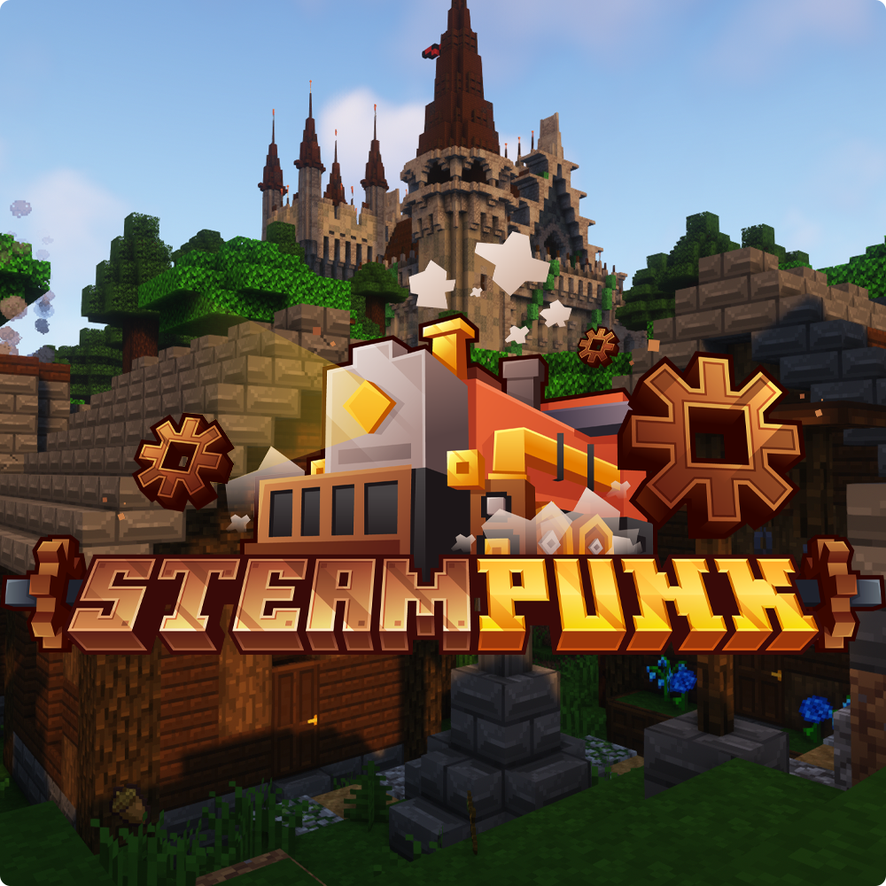

See my work

Découvrez l'univers Steampunk
Explorez une ère alternative où la technologie à vapeur règne en maître, où l'aventure vous attend à chaque coin de rue et où l'imagination n'a aucune limite. Plongez-vous dans un univers rétro-futuriste où l'ingéniosité humaine et la puissance mécanique se rencontrent pour créer des paysages époustouflants et des machines extraordinaires.
Fonctionnalités Principales
- Technologie à Vapeur Avancée: Domptez la puissance de la vapeur pour alimenter des machines incroyables, des locomotives aux automates en passant par les gadgets les plus farfelus.
- Exploration Illimitée: Partez à la découverte d'un monde ouvert rempli de secrets à dévoiler et de trésors à trouver. Des villes animées aux contrées sauvages, chaque lieu regorge de surprises.
- Personnalisation Sans Limite: Créez votre propre équipement steampunk, personnalisez vos véhicules et érigez des structures impressionnantes à l'aide d'une gamme de matériaux et de technologies uniques.
- Aventures Enrichissantes: Affrontez des monstres mécaniques, résolvez des énigmes complexes et plongez dans des quêtes captivantes qui vous emmèneront aux confins de ce monde alternatif.
Rejoignez la Communauté
Que vous soyez un vétéran du steampunk ou un explorateur intrépide à la recherche de nouvelles expériences, le Mod Pack Steampunk offre une communauté accueillante où partager vos aventures, échanger des idées et collaborer avec d'autres passionnés.
Téléchargez dès Maintenant
Préparez-vous à vivre une aventure inoubliable dans un monde où l'ingéniosité et l'aventure se rejoignent. Téléchargez dès maintenant le Mod Pack Steampunk et plongez dans une épopée steampunk comme aucune autre !
Rejoignez-nous et laissez libre cours à votre imagination dans le monde fascinant du Mod Pack Steampunk !
Mods Principaux du Modpack Steampunk
Liste des Mods :
- Immersive Engineering: Introduit des machines et des outils alimentés par la vapeur, ainsi que des câbles électriques et des générateurs.
- Thermal Expansion: Ajoute de nouvelles machines et mécanismes, y compris des dynamos alimentées par la vapeur et des dispositifs de traitement des matériaux.
- Clockwork Phase: Propose des technologies et des machines basées sur les engrenages et les mécanismes horlogers.
- Better With Mods: Offre des améliorations aux mécanismes de base de Minecraft, avec une esthétique steampunk.
- Steamcraft2: Introduit de nouveaux blocs, objets et mécanismes alimentés par la vapeur.
- Grimoire of Gaia: Apporte de nouvelles créatures et monstres, certains avec une esthétique mécanique ou steampunk.
- Chisel & Bits: Permet la création et la modification détaillée de blocs pour des constructions personnalisées et esthétiques.
- Chisels & Bits Compat: Étend les fonctionnalités de Chisel & Bits pour être compatible avec d'autres mods.
- Tinker's Construct: Introduit un système de création d'outils et d'armes personnalisables, qui pourrait être adapté à l'esthétique steampunk.
- Railcraft: Ajoute une variété de rails, de wagons et de mécanismes ferroviaires, parfaits pour un monde steampunk.
- HarvestCraft: Offre une large gamme de cultures et de recettes culinaires, pour créer une économie agricole dans votre monde steampunk.
- PneumaticCraft: Introduit des mécanismes alimentés par l'air comprimé, qui peuvent être intégrés dans des constructions steampunk.
- Mekanism: Propose une variété de machines avancées alimentées par divers types de vapeur et d'énergies.
- MrCrayfish's Furniture Mod: Ajoute une sélection de meubles et d'éléments de décoration pour personnaliser vos constructions steampunk.
- Bibliocraft: Offre une gamme de meubles et d'accessoires décoratifs, parfaits pour ajouter des détails à votre monde steampunk.